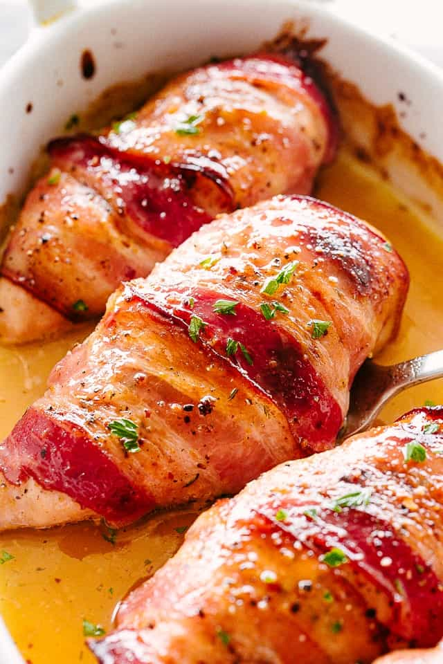

Brown Sugar Bacon wrapped Chicken

Ingredients
- 2 Tbsp. chili powder
- 1 tsp. cumin
- 1/2 tsp. garlic powder
- 1/4 tsp. salt
- 1/8 tsp. pepper
- 2/3 cup Brown Sugar Blend or and 1 1/3 cup light brown sugar
- 1 1/2 pounds boneless chicken breasts cut into tenders
- bacon with pieces cut in half
Instructions
- Preheat oven to 350ºF. Generously spray a broiling pan with cooking spray and set aside.
- In a bowl, mix together the chili powder, cumin, garlic powder, salt and pepper. Stir to combine.
- In another bowl, pour in Truvia Brown Sugar (or brown sugar).
- Roll chicken pieces in chili powder mixture.
- Next, secure a piece of bacon around the chicken using a toothpick.
- Now roll in the brown sugar until well covered.
- Place on the prepared baking pan. Bake for about 30 minutes or until cooked through.
- If you like bacon crispier, place under broiler for a few minutes until bacon is brown and crispy.
Hungarian Chicken Paprikash
Ingredients
- 1 (12-oz.) pkg. No Yolks Broad noodles
- 1 medium white onion
- 4 tablespoons unsalted butter
- 3 tablespoons Hungarian sweet paprika
- 1 teaspoon salt
- 1/2 teaspoon freshly ground black pepper
- 2.5 pounds chicken breasts and thighs
- 3 tablespoons flour, divided
- 1 1/2 cups chicken broth
- 1 cup sour cream
Instructions
- Dice the onion, and cut the chicken breasts and thighs into bite-size chunks.
- In a large skillet, sauté the onion in the butter over medium heat until translucent. Meanwhile, toss the diced chicken pieces with about two tablespoons of flour. Add the coated chicken to the pan, and brown on all sides. Once the chicken is browned, add the sweet paprika, salt, and pepper, and stir well.
- Slowly add the chicken broth to the pan, and use a wooden spoon to scrape and deglaze the bottom of the skillet. Cover and simmer on low for 25 minutes. While the chicken is simmering, prepare the No Yolks noodles according to the directions on the package.
- Remove the chicken to a plate. Whisk about one tablespoon of flour into the drippings left in the skillet to thicken. Turn off the heat and stir in the sour cream. Add the chicken back to the sauce and stir to coat.
- Season to taste with additional salt, and serve immediately over broad egg noodles.